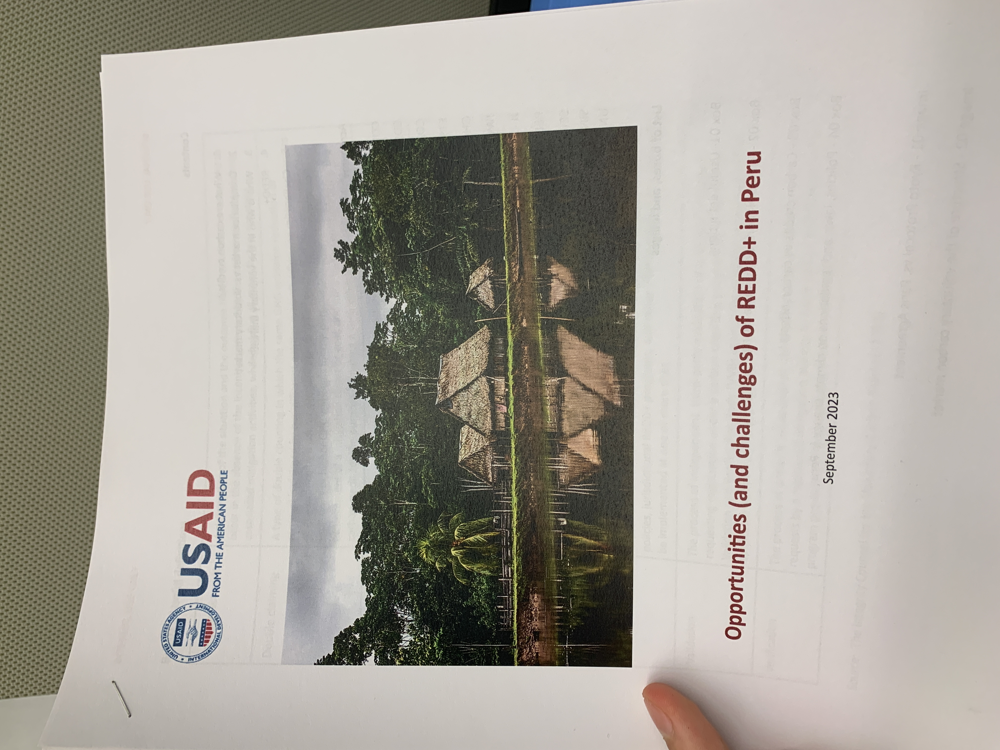
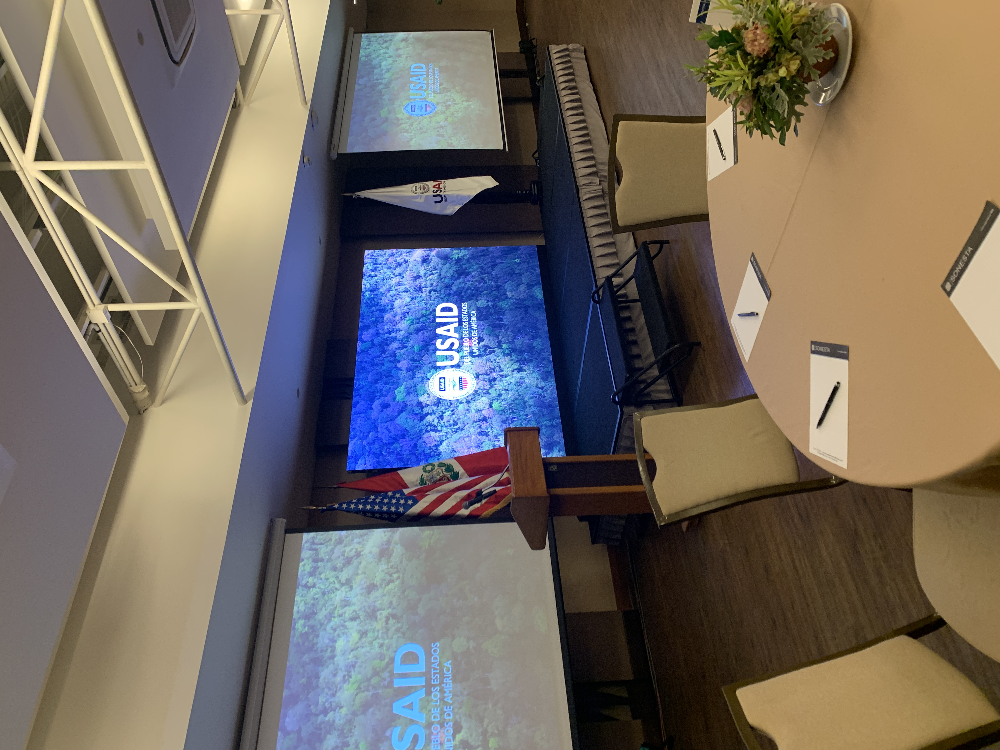

International public service
Work in Peru
Research, coordination, and public service across environmental programming and embassy operations.
U.S. Embassy, Lima
Human Resources Intern · August–September 2024
I managed personnel records and payment spreadsheets, supported events and website updates, and assisted with interagency planning and logistics for the presidential pre-advance ahead of the 2024 APEC Leaders’ Summit.

USAID Peru
Environmental Office Intern · July–September 2023
I helped organize and digitize departmental records for USAID’s Environmental and Sustainable Development Regional Office at the U.S. Embassy in Lima. Based in Peru, our team worked across Peru, Ecuador, Colombia, Guyana, and Suriname.
I also spearheaded an independent research project with my supervisor on Peru’s carbon-credit market. We analyzed misrepresented carbon-market data from Peru’s SERNANP and SERFOR agencies and from third-party mediators and contractors working through the REDD+ program. The findings were published in a 40-page report and presented to the USAID office.

